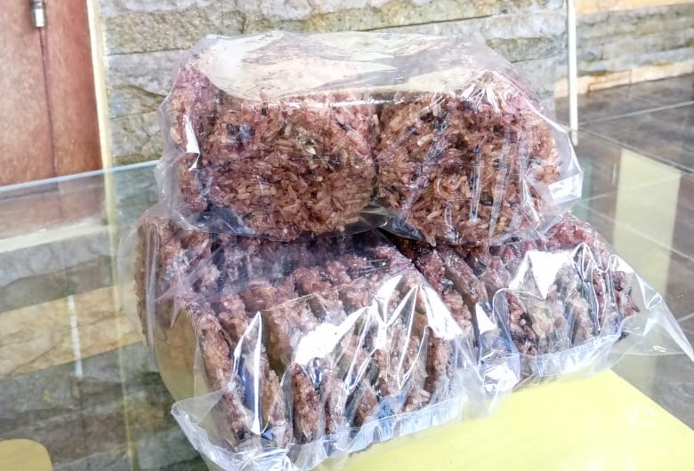
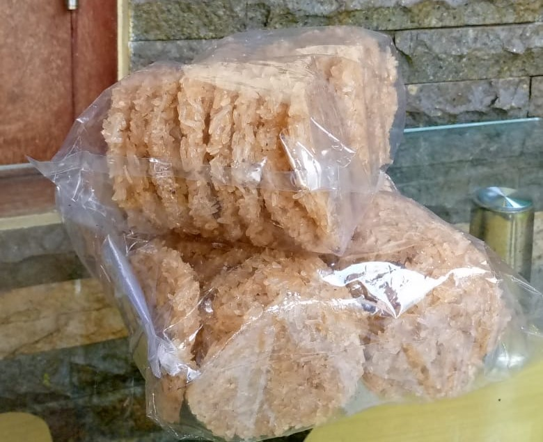

Rngginang M'pok Era


Rengginang Hitam
Juni 03, 2023
Rengginang Hitam dibuat menggunakan beras
ketan hitam atau ketan item. Penggunaan beras ketan hitam memberikan aroma dan
rasa yang khas.
tekstur yang lembut.
Rengginang Hitam memiliki warna yang gelap atau
kecokelatan karena menggunakan beras ketan hitam sebagai bahan dasarnya.

Rengginang Putih
Juni 03, 2023
Rengginang Putih dibuat dengan beras ketan putih.
Ketan putih
memberikan warna yang lebih cerah dan
tekstur yang lembut.
Rengginang putih memiliki warna yang lebih terang dan putih karena
menggunakan
beras ketan putih sebagai bahan dasarnya.